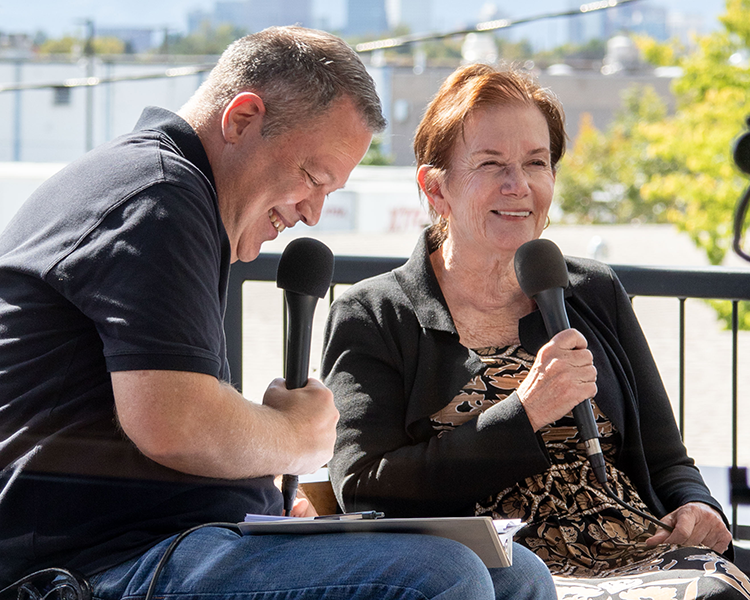
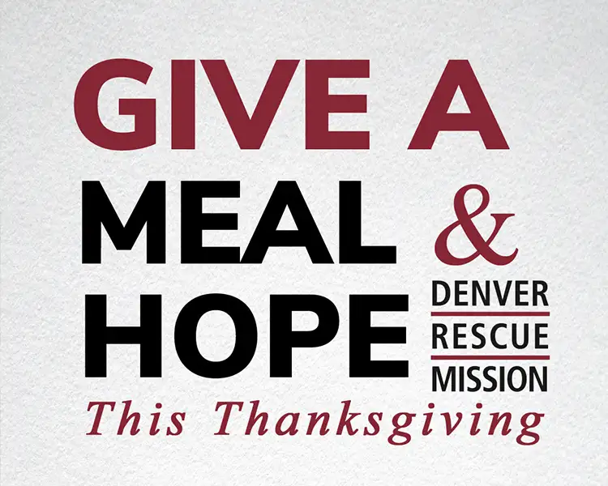

Prevention
Sometimes the most important step toward stability happens before someone ever loses their home.
Your gift can open that same door for someone else.
Ending homelessness, one life at a time.
Through the power of Christ, working to bring an end to homelessness in Metro Denver and Northern Colorado, one life at a time.
Prevention, Dignity, Recovery, Readiness, and Housing guide our work. Programs put these strategies into practice, and a single program can support more than one strategy.
Sometimes the most important step toward stability happens before someone ever loses their home.
A welcoming place. A listening ear. The respect every neighbor deserves. Dignity is the foundation of how we meet people, wherever their journey begins.
For people navigating addiction, trauma, and other difficult circumstances, change takes time. Recovery is built through relationships, support, and the opportunity to move forward—one step at a time.
Lasting stability takes more than a single opportunity. It takes preparation, confidence, relationships, and practical tools to move forward.
A safe, stable place to call home changes what is possible. Our work connects neighbors with support as they seek housing—and as they build a foundation for what comes next.
Individuals Obtained More Stable Housing
New Life Program One-Year Success Rate in Housing
Unique People Served
Individuals Obtained or Improved Employment
Read the Mission’s published impact results and financial reports.
Find an opportunity to serve.
Support the Mission through financial gifts, donated items and other giving options.
Find meals, shelter, recovery and other services.
Nightly shelter for men, with bed assignments coordinated through the Lawrence Street Community Center.
A residential program for men seeking recovery, life skills, employment and sustainable housing.
At The Crossing, Bridge gives men, women and families a safe place to live while working toward stable housing.
In partnership with public schools, one-time financial assistance and case management help families at risk of losing their housing.

October 5, 2026
Join us for a powerful and moving 24-hour livestream event designed to change the narrative around homelessness. “Conversations on a Bench” is more than just an event; it’s a movement to rehumanize people experiencing homelessness in our community by sharing their authentic stories of transformation, resilience, and ho…

October 4, 2026
Mark your calendars for November 12 because Denver Rescue Mission is taking over 97.3 KBCO for our annual Radioth…

October 1, 2026
Abel grew up in a military family, moving from place to place throughout his childhood, including time in Colorado Springs. But as an adult, he found himself stuck in a different kind of cycle—one shaped by addicti…

October 1, 2026
When rock star Jon Bon Jovi donated money to and toured a homeless shelter in New Jersey a few years ago, it became a national news story. I remember the staff at the Mission I was serving asking, “What if a huge star toured our Mission and supported us?” The truth is we have someone more important than Bon Jovi who enters our Mission every nig…